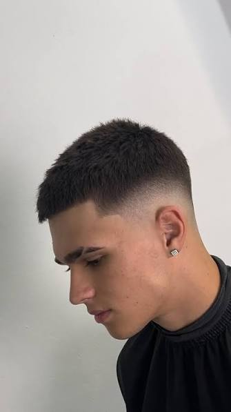
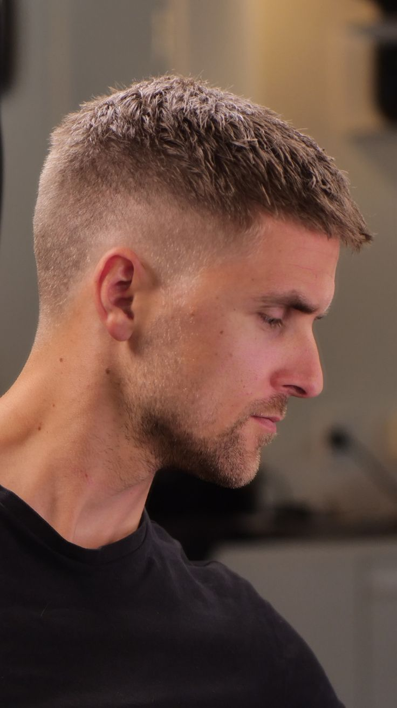
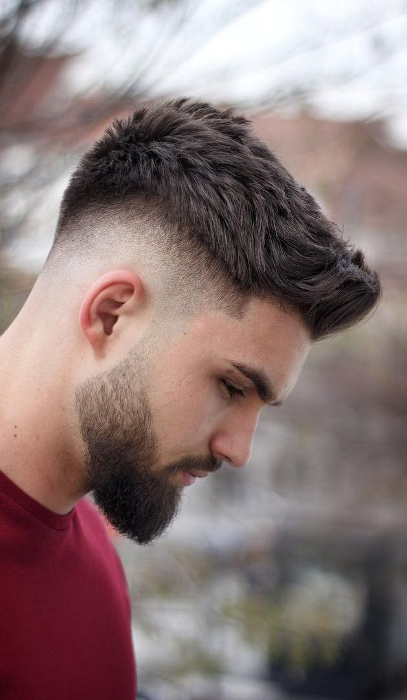
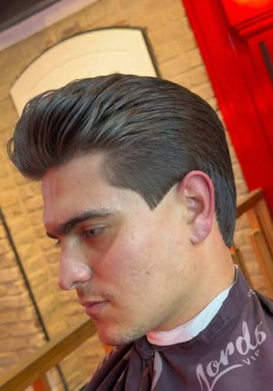
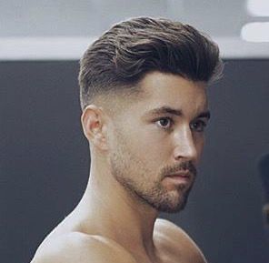
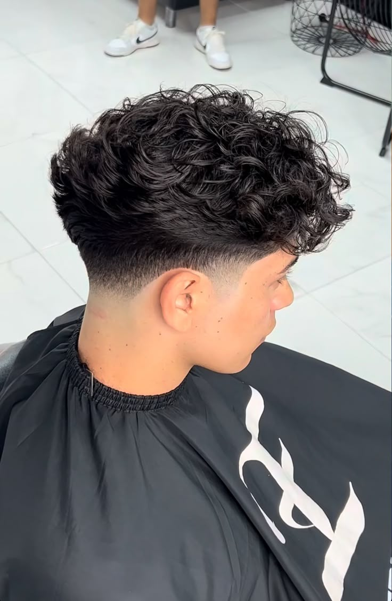
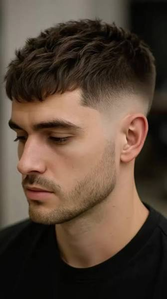
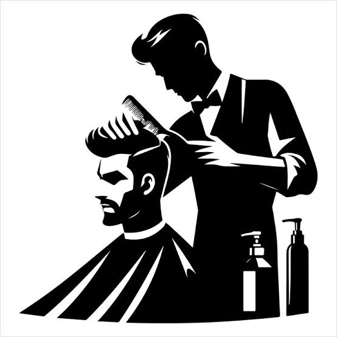

estilo de cabello ultracorto y uniforme hecho con máquina.

peinado corto para hombre que deja el cabello más largo en la parte superior de la cabeza y muy corto, degradado o rebajado en los lados y la nuca.

estilo clásico y elegante donde el cabello se peina dividiéndolo de un lado, dejando la parte superior más larga y los lados cortos o degradados.

se caracteriza por llevar el cabello largo y levantado hacia atrás desde la frente, acompañado usualmente por laterales cortos o desvanecidos.

estilo clásico y elegante en el que el cabello de la parte superior se peina completamente hacia atrás.

corte de pelo para hombre que desvanece o degrada únicamente las patillas y la nuca, manteniendo el largo natural en los laterales y la parte superior.

estilo de cabello masculino que se caracteriza por llevar los lados y la nuca muy cortos o rapados y la parte superior un poco mas larga.

Trae una foto de referencia o dinos que idea tienes en mente.